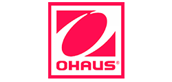
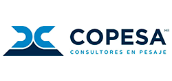

Instalamos y configuramos el software líder de la región, Mr. Tienda® y Mr. Chef®, respaldados por hardware de uso rudo y alta durabilidad de marcas como HP, SAM4S, Datalogic, CAS, DELL y más.
Pantallas táctiles (Touch Screen) y teclados industriales.
Scanners de alta resolución, gavetas de dinero e impresoras térmicas.
Integración con básculas a prueba de agua para abarrotes y carnicerías.
Capacitación completa para tu personal operativo.
Más de 2000 instalaciones exitosas en Baja California y el noroeste. Equipos y mano de obra garantizados.
Conectamos báscula, punto de venta e inventario en un solo flujo de operación.
Pesaje exacto
Venta, renta y calibración de básculas
Soluciones de pesaje exacto para cualquier industria: desde balanzas de laboratorio de alta precisión hasta robustas básculas industriales y plataformas de hasta 10 toneladas.
Calibración certificada con pesas patrón para la exactitud exigida por la ley.
Renta de equipos: básculas contadoras y de plataforma por días o temporadas.
Mantenimiento: planes de servicio preventivo y soporte correctivo inmediato.
Equipos y mano de obra garantizados en cada venta e instalación.
Modernización con básculas de inteligencia artificial
Integramos equipos de pesaje con IA que ya operan en sucursales de nuestros clientes: reconocen el producto por visión, agilizan el etiquetado y reducen errores en el mostrador. Te acompañamos desde la selección del equipo hasta la puesta en marcha y la capacitación.
Reconocimiento automático de frutas, verduras y granel.
Integración con tu punto de venta y tu catálogo de precios.
Soporte y refacciones locales para no detener la operación.
Con 46 años de experiencia, nuestros ingenieros llegan a tu sucursal o planta industrial en cada municipio de Baja California, en San Luis Río Colorado, La Paz y Los Cabos. Tenemos una base con stock de equipos y refacciones en Mexicali.
TijuanaMexicaliEnsenadaTecateSan Luis R.C.La PazLos Cabos
Preguntas frecuentes
Sobre nuestros servicios
Sí, se realiza con pesas patrón trazables y se entrega reporte de resultados por escrito.
Sí, manejamos renta de básculas contadoras y de plataforma por días, semanas o temporadas específicas.
Configuración del software, integración de periféricos (scanner, báscula, impresora) y capacitación al personal.
Sí, damos servicio en cada municipio de Baja California, en San Luis Río Colorado, La Paz y Los Cabos, con visitas técnicas programadas y una base con stock en Mexicali.
Trabajamos con


¿Necesitas equipar o modernizar tu negocio?
Un asesor te ayuda a elegir el servicio exacto para tu operación.